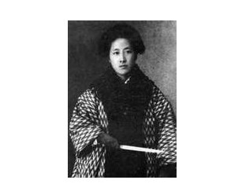

【鲁迅】、【王羲之】、【蔡元培】、【秋瑾】、【周恩来】

秋瑾（1875－1907），近代民主革命志士，原名秋闺瑾，字璇卿，号旦吾，乳名玉姑，东渡后改名瑾，字（或作别号）竞雄，自称“鉴湖女侠”，笔名秋千，曾用笔名白萍，祖籍浙江山阴（今绍兴），生于福建闽县l（今福州），其蔑视封建礼法，提倡男女平等，常以花木兰、秦良玉自喻，性豪侠，习文练武，曾自费东渡日本留学。积极投身革命，先后参加过 三合会、光复会、同盟会等革命组织，联络会党计划响应萍浏醴起义未果。1907年，她与徐锡麟等组织光复军，拟于7月6日在浙江、安徽同时起义，事泄被捕。7月15日从容就义于绍兴轩亭口。有同名电影。